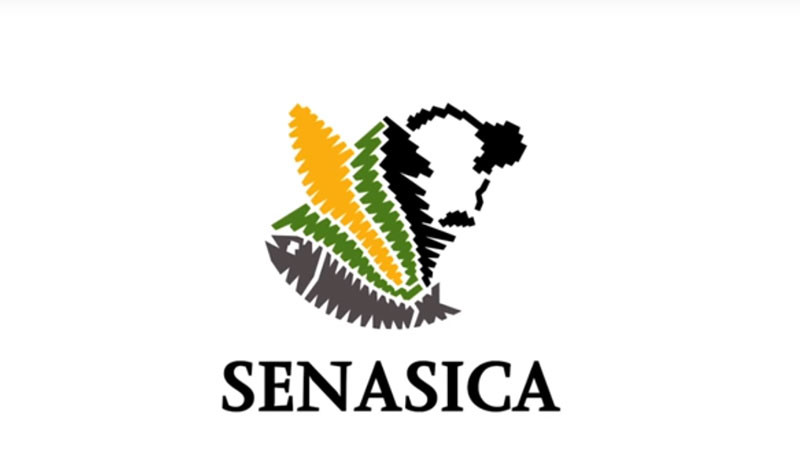
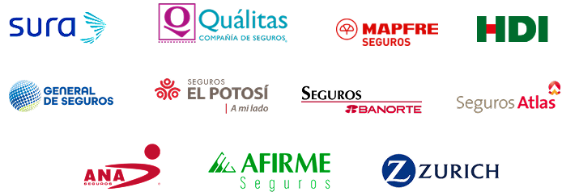

PAW Chain
Open Pet Identity
Problem Statement
The Coordination Failure
Mexico has over 80 million pets (69.8% of households). The pet services market is projected to reach $6.3 billion USD by 2032.
Yet, the information infrastructure is deeply fragmented. Vaccination records get lost. Veterinary histories are siloed within individual clinics. Ownership transfers lack verifiable trails. Trust is rebuilt from scratch every time.
This is not a data problem. The data exists. It is a coordination problem between multiple actors with different incentives who share no common trust infrastructure.
Why Existing Solutions Fail
Centralized Databases
They have a single controller whose incentives do not always align with all actors. They can change access rules, charge fees, be hacked, or shut down. They require everyone to trust the same central authority.
DAO-Governed Protocol
Rules exist in public, auditable code. No actor controls them unilaterally. Changes require consensus. Functions independent of any company or government.
The Travel Clearance Problem
A concrete manifestation: Traveling internationally requires multiple documents from different actors, with different formats, seals, and expiration dates. PAW Chain digitizes them into cryptographically signed credentials verifiable via QR scan.
| Document | Today's Fragmented System | PAW Chain Solution |
|---|---|---|
| Health certificate | Paper · expires in 15 days · manual process | On-chain credential · signed by Validator |
| Rabies vaccine | Physical card · easily lost or falsified | Linked to NFT · lot number on-chain |
| Ownership proof | Verbal or paper-based · no auditable trail | NFT transfer history · immutable |
| Verification | Manual document review · falsification risk | QR scan · on-chain query · seconds |
DAO Theory Applied
A DAO is not fundamentally a voting tool. It is a coordination mechanism for actors who share a common interest but lack a common trust infrastructure.
Actors who don't know each other
A pet owner in CDMX and a vet in Monterrey have no shared history. Trust requires a shared protocol.
Actors who don't trust each other
Paper can be forged. Private databases altered. On-chain credentials signed with a private key cannot.
No desired central authority
PETCO, airlines, and vets have different incentives. None will accept another controlling the registry.
Why Blockchain?
The answer is economic and strategic, not technical. A centralized database has an owner with asymmetric power. A smart contract on Ethereum is the equivalent of a public notary that never closes, never makes errors, and can be audited by anyone.
The question is whether the problem requires coordination between actors who cannot trust a common central authority. If yes, a DAO on Ethereum is the only structurally correct solution.
Monterrey Innovation District
The District is itself an experiment in coordination between heterogeneous actors. It provides the perfect reference ecosystem.
- Technical talent: Tec de Monterrey produces more engineers than any other Mexican institution.
- Trust culture: Anchor companies (FEMSA, Alfa) lower adoption friction.
- Web3 presence: Active blockchain community ready for DAO governance.
Protocol Design
PAW Chain is open protocol infrastructure—a composable identity layer on which any application, clinic, or platform can build without requesting authorization.
L1: Digital Identity
Unique ERC-721 NFT on Base L2. Permanent IPFS metadata via Pinata. Cryptographically tied to owner's wallet.
L2: Verifiable Credentials
DAO-authorized vets issue signed health credentials (vaccines, surgeries) linked to the pet's identity token.
L3: Travel Clearance
Airline agents scan QR to instantly verify on-chain health certs and rabies vaccines. Impossible to forge.
L4: DAO Governance
Rules proposed via PIPs. Voting conducted via Snapshot (off-chain wallet signature, no gas cost).
Technical Architecture
| Backend: | Python/FastAPI. Core logic & Web3.py interaction. |
| Database: | SQLite for pilot, scaling to PostgreSQL. |
| Blockchain: | Solidity/Base L2. OpenZeppelin security standards. |
| Frontend: | HTML/JS/CSS with MetaMask integration for signing. |
Scope Definition
Pilot Includes:
NFT identity, IPFS metadata + QR, simulated credentials, travel clearance demo, on-chain transfers, wallet-based DAO voting.
Out of Scope:
Existing vet software integration, legal recognition of records, insurance products, speculative tokenomics.
External Factors
Regulatory
Must align with mandatory CDMX RUAC & microchipping (April 2026), avoid marketplace perception (Animal Protection Law), and handle Data Privacy (Right to be Forgotten).
Technical
Utilizes W3C DIDs and Verifiable Credentials. Requires a reliable physical-to-digital bridge (NFC/RFID scanning via mobile).
Community
Leverages local hubs (PET FEST). Drives engagement via DAO Transparency dashboards and Gamification (Proof of Care rewards).
Governance Model
The Participants
Not everyone has the same role or voting power. The ecosystem is divided into four specific actors:
Pet Owners
Use the protocol to register their animals.
Veterinary Validators
Issue on-chain medical credentials. Higher voting weight.
Institutional Verifiers
Strictly read and verify credentials without needing to join the DAO.
Institutional Observers
Organizations (Tec de Monterrey or FEMSA) with voice but no voting power.
The Two-Layer Governance System
Layer 1: Community Voting
(The Decision Makers)
- Proposals: Anyone can submit PAW Improvement Proposals (PIPs) to change or update protocol rules.
- Process: PIPs are debated for 5–7 days and voted on using a tool called Snapshot.
- Voting Power: Veterinary Validators get 3 votes, while other eligible voters get 1 vote.
- Security: No single institution can hold more than 20% of the validator pool to prevent centralized capture.
Layer 2: Technical Committee
(The Safety Check)
- Execution: A 5-person multisig wallet (requiring 3 signatures to act) handles the actual on-chain execution.
- Limitation: This committee cannot override a community vote. Their sole purpose is to verify that the execution is correct and introduces no code vulnerabilities.
Institutional Verifiers (Consume Without Governing)
Entities that strictly read and verify credentials without needing to join the DAO:
Airlines
Scan QR to verify vaccines & certs instantly. Scales protocol via market inertia.

SENASICA
Verifier at borders and potential Authorized Emitter of Export Certs on-chain.

Insurers
Authentic data reduces claim fraud. Potential first payers for premium API access.
Customs
US CBP & EU TRACES compatibility via open Ethereum standard.
Progressive Decentralization
Implementation Plan
What Has Already Been Built
Contract Deployed
Base Mainnet L2
TOKEN #001
Bella (Shih Tzu) Minted
Active Governance
PIP-000 Voting Live
Pilot Execution: 9 Sequential Stages
| Stage | Objective | Measurable deliverable |
|---|---|---|
| 1 · Education & alignment | Community understands the problem before interacting with the protocol | Presentation · glossary · published narrative |
| 2 · Wallet onboarding | Reduce protocol entry friction for non-technical users | 15+ wallets on Base Mainnet · step-by-step tutorial |
| 3 · Pet registration | Capture initial profiles and generate identity metadata | Functional form · metadata schema approved by PIP-001 |
| 4 · Identity minting | Issue ERC-721 tokens and link to IPFS metadata | 10–20 tokens minted · Basescan links |
| 5 · QR verification | Give immediate visible utility to the digital identity | Active QR per pet · functional public verification page |
| 6 · Veterinary credentials | Add clinical value to the profile via credentials | Health record structure · examples of issued credentials |
| 7 · Ownership transfer | Demonstrate on-chain ownership traceability | Live transfer demo · history visible in explorer |
| 8 · Active DAO governance | Execute complete proposal → deliberation → vote → implementation cycle | 3–4 PIPs published · 2+ PIPs implemented |
| 9 · Pilot evaluation | Measure results, document learnings, define scale roadmap | Final report · adoption metrics · lessons learned published |
Economic & Social Impact
LatAm Scale
Pets across region
Mexico Market
Valuation (2025)
Target Demo
Pets in Mexico
Unmet Demand
Seek new digital services
Market Strategy
Founding Community (Tec CDMX): Validates infrastructure within a high-trust environment. High digital literacy and academic capacity to measure results.
Primary Market (Mexico City): Largest urban pet market in the country with high mobility. Portable credentials generate immediate value for owners and vets.
Social Impact
- Reduces the risk of duplicate vaccinations or treatments
- Enables long-term detection of medical patterns
- Facilitates faster diagnoses in emergency situations
- Improves coordination between veterinarians when a pet changes clinics
Protocol Economic Model
Three mechanisms feed the DAO treasury:
- Identity registration fee: Minimal fee when minting NFT.
- Credential issuance fees: Paid by vets issuing records.
- API & verification access fees: Paid by airlines/insurers querying at scale.
Broader Impact
Clinical & Social: 35% of vet consults lack verified history. PAW Chain reduces duplicate treatments and enables emergency tracking. It democratizes credibility.
Ethereum Ecosystem: Proves Ethereum solves coordination problems in massive real-economy markets beyond DeFi, creating a regional standard.
Funding Request
This proposal requests ecosystem support to move PAW Chain from validated concept to deployed production protocol over a six-month horizon.
Ethereum Foundation · Ecosystem Support Program
PAW Chain · Funding Request
$75,000
USD · 6-month grant
| Work stream | Key deliverable | Timeline | Budget |
|---|---|---|---|
| Smart contract development | ERC-721 identity contract + credential registry on Base Mainnet · IPFS integration via Pinata · QR verification system | Month 1–3 | $18,000 |
|
Security audit Largest single line item |
Third-party audit of identity + governance contracts · one remediation cycle · re-audit verification · market rate: $15K–$50K for NFT + governance scope | Month 3–4 | $28,000 |
| DAO infrastructure | Governance contracts · Snapshot space · Tally integration · Safe multisig 3-of-5 · founding Validator SBT distribution | Month 2–4 | $10,000 |
| Pilot deployment | 500+ pet owners onboarded · 20 Validators certified · first 500 tokens minted on Base · operational QR verification live | Month 4–6 | $8,000 |
| Open-source SDK | Developer toolkit for third-party builds on PAW Chain identity layer · integration guides for vets, airlines, insurers | Month 5–6 | $7,000 |
| Documentation & research | Protocol whitepaper · academic publication (EGADE / Tec de Monterrey) · open-source GitHub · public developer docs | Month 6 | $4,000 |
|
Total All funds → open-source public goods · no founder compensation · no token issuance |
6-month development cycle · Base Mainnet · open-source · academically validated · Ethereum Foundation ESP | Month 1–6 | $75,000 |
Budget allocation
Why Ethereum Foundation ESP
PAW Chain is precisely the type of project the Ecosystem Support Program was designed to fund:
Open Infrastructure
No proprietary lock-in, no single controller, composable by any developer.
Real Market
80 million pets, $4.5B market, 37% unserved demand in Mexico alone.
Existing Traction
Contract deployed, token minted, community vote active, academic backing.
Expands Ethereum
Sovereign identity for physical-world entities — a new narrative for the ecosystem.
Community Validation — Real Data
Paragraph Proposal · Tally Vote · Live Data